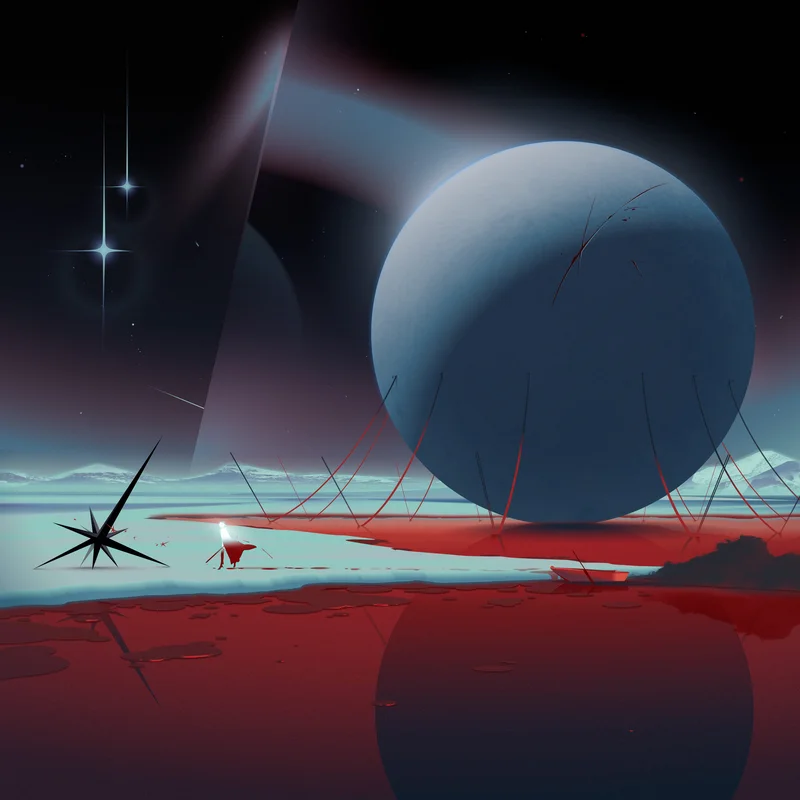
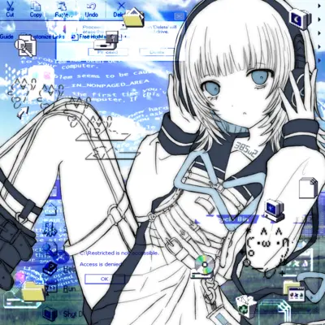
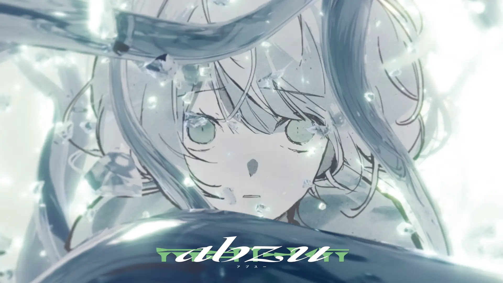
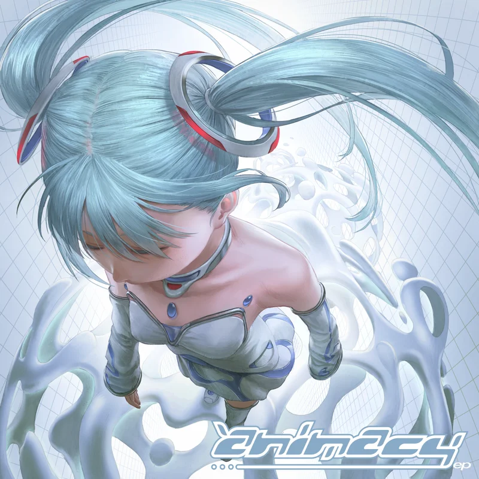
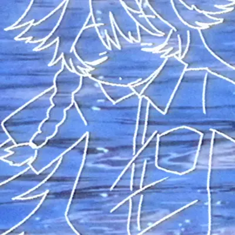

Portfolio
Portfolio / Works
ボーカル楽曲、キャラクター企画、ゲーム、映像作品、電子音楽文脈に向けた作編曲・サウンドプロデュースを行っています。
- キャラクター・テーマ制作
- オリジナルキャラクターや世界観、依頼テーマを読み取り、作品として再構成します。
- アルバム総合制作
- 作編曲、音像設計、ナラティブを一貫して構築します。
- ボーカル共作・受託制作
- 受託制作、共作、ボーカリスト様からのご依頼に対応します。作詞もお受けできます。
対応領域
- Songs / Vocal WorksVTuber、アイドル、VOCALOID、Vsinger、キャラクターソングなど、声を中心にした楽曲の作編曲・サウンドプロデュース。
- Soundtrack / Game / Visualキャラクター、世界観、シーン設計をもとにしたBGM・劇伴・テーマ楽曲制作。
- Remix / Rearrangement原曲の魅力を読み取り、電子音楽・クラブミュージック・別ジャンルの文脈で再構築。
- Video / Visual Production音楽作品の意図を理解したMV、告知映像、短尺映像の構成・編集・ディレクション。
- Lessons / Consultation作編曲、音作り、ミックス、制作ワークフローの個別講座・添削・相談。
Songs / Vocal Works
6



Soundtrack / Game / Visual
42023-
Character / Theme-based Commission Works
オリジナルキャラクターや世界観、依頼テーマを読み取り、楽曲として再構成するコミッションワーク。公開可能作品11/14件で、大半がキャラクター/世界観ベース。
2025 / Skeb
論理・数学・推理をテーマにしたOCの設定をもとに、研究と発見の積み重ねから“Eureka”の瞬間へ至る物語を、展開・テンポ変化・音色設計で表現したコミッション楽曲。
Remix / Rearrangement
22025
CULT P - prʌ́ʃən (elli mia Remix)
公式依頼リミックスとして、原曲の構造的なギャップを読み取り、魅力を強化した再構築作品。 （フィジカル収録のため、公開リンクはXFDのみ。）
2023
templime + 星宮とと - umino nioi (elli mia Remix)
原曲をfuture garage / 電子音楽寄りに再解釈し、透明感と素直な聴きやすさを見せるリミックス。
Video / Visual Production
22018-
Music Video / Promotion Video Works
MV・告知映像を中心に、依頼案件として多数制作。音楽作品の意図を理解した映像設計に対応。
Lessons / Consultation
1Ongoing
DTM / Composition Consultation
サークル内外で約20名に指導。中級者を中心に、作編曲、音作り、ミックス、情報収集、プロジェクト解説などを個別講座・単発相談で指導。
ご依頼・ご相談
作編曲、リミックス、映像制作、講座などのご依頼は、詳細ページまたはお問い合わせからご相談ください。